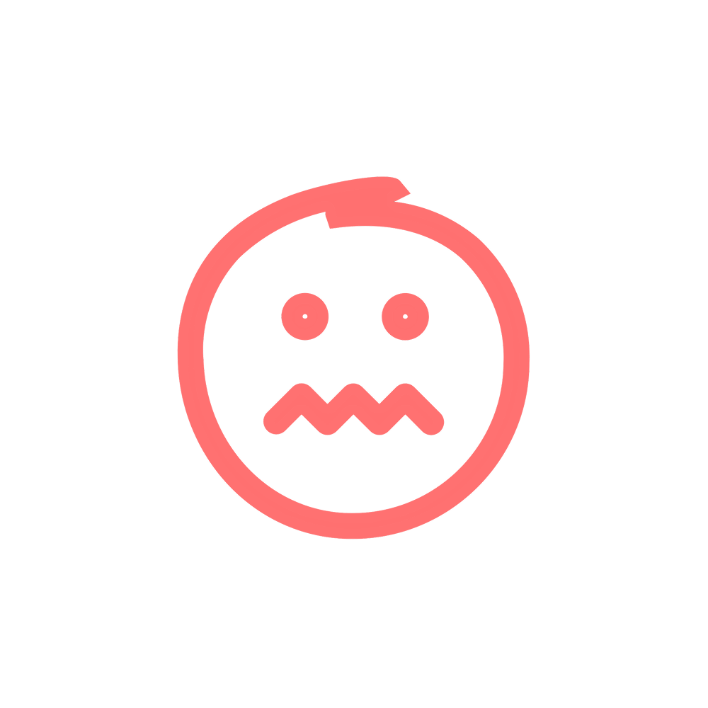
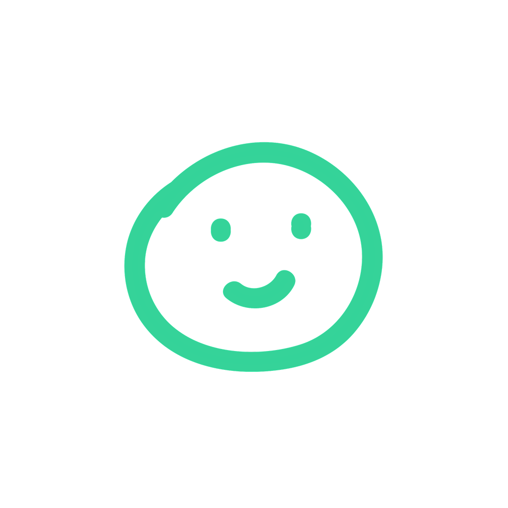
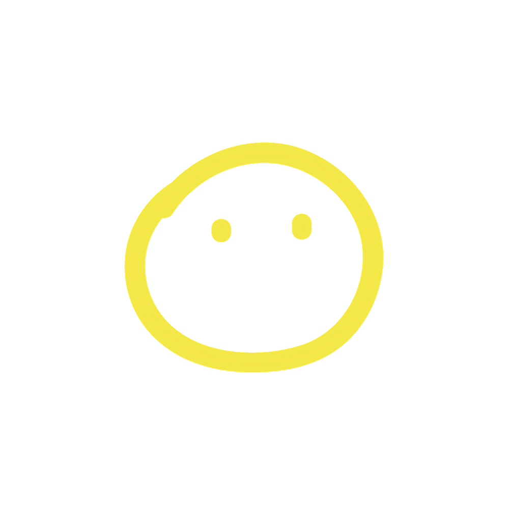

Hey, I'm Lobi.
I help you stay focused without running yourself into the ground. Think of me like a tiny focus buddy that notices when your brain needs support.
What helps you reset best?
Everyone's brain resets differently. Pick a few things that help you feel clear, calm, or locked back in.
Help me understand your focus patterns
Lobi uses blink rate and eye strain patterns to gently estimate when your focus or mental energy is dipping. Your camera feed stays completely private and never leaves your computer.
No recordings. No screenshots. No humans watching.
Get gentle focus nudges in real time
Most people notice they're drained after it's already affected them. Lobi catches those moments earlier with small nudges to protect your momentum before you hit a wall.
The nudges only work if notifications are turned on.

Your mental snapshot lives up here
Check in anytime for a quick read on your focus, mental energy, and how your day is going.
No spreadsheets. No productivity guilt. Just useful signals you can actually act on.
You're all set
Go about your day like normal.
Lobi will quietly keep an eye on your focus patterns and tap you on the shoulder when it looks like your brain could use support.
Small nudges. Better workdays. More energy left for life outside the screen.